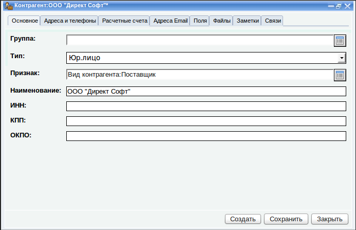

Варианты использования программы
Программу можно использовать как в
личных целях, так и для выполнения целей организации, в которой Вы
работаете. В этом разделе мы рассмотрим несколько вариантов
использования программы. Мы пойдем от простого к сложному.
В программу можно вводить различную
информацию, которую не удержать в голове. Часто для этого
приходится использовать ежедневники или липкие записки, которые
расклеиваются по стенам или на мониторе.
Все это можно хранить в программе, на следующих закладках:
- Контрагенты
- Контактные лица
- Адреса E-mail
- Заметки
Более того, прочитав прошлый раздел можно понять, что к записи любого типа можно прикреплять любое
количество произвольных полей, а также, можно связывать записи между
собой. Например одному контрагенту может принадлежать несколько e-mail
адресов или один e-mail-адрес может использоваться несколькими
контрагентами.
В программе нет таких жестких
требований по заполнению информационных карточек объектов, как например
в 1С. Почти все поля не являются обязательными, это позволяет вносить
любую информацию сразу, по мере поступления, а не сначала ее всю
собирать, а потом вносить. Сначала можно указать лишь наименование
контрагента, а потом, по мере поступления дополнительной информации
вносить все остальное.
По каждому контрагенту вводятся основные реквизиты, такие как Наименование, Телефоны, Адреса, ИНН, а также любое количество дополнительной информации на закладке "Поля" с помощью механизма дополнительных полей.

Кроме того что к карточке контрагента можно добавлять заметки и файлы, можно прямо в форме
контрагента добавлять ему адреса E-mail. При этом адреса E-mail будут
появляться в общем списке E-mail-адресов (в окне "Мои дела" на закладке "Адреса E-Mail") и одновременно в окне данного контрагента, на закладке "Адреса Email".
На основании Контрагента можно
создавать карточки людей, которые каким-то образом с ним связаны. Для
этого в окне контрагента можно нажать кнопку "Создать" и выбрать "Контактное лицо" из списка:
У контактного лица тоже указывается адрес, телефоны, адреса E-mail.
Естественно к нему можно прикреплять заметки и файлы. Можно создавать в
его информационной карточке дополнительные поля. Можно также добавить
фото.
В результате у Вас появляется
адресная книга в списках "Контрагенты", "Контактые лица" и "Адреса
E-Mail". Можно запускать по этим спискам поиск, устанавливать фильтры.
Можно прикреплять к их элементам файлы и заметки, можно связывать
элементы между собой и в дальнейшем искать нужную информацию с помощью
дерева связей, которое находится на закладке "Связи" каждого объекта.
Электронный архив документов
Когда мы
привязываем файл к чему-либо, мы создаем его информационную карточку. С
точки зрения терминологии документооборота - электронный документ это
файл + регистрационная карточка, на которой указывается информация,
описывающая и классифицирующая его. В данном случае роль
регистрационной карточки выполняет информационная карточка файла.
Информация о файле указывается в полях "Наименование" и "Описание".
Классификацию файлов можно организовать с помощью дополнительных полей.
Можно разработать классификатор и затем регистрировать файлы в системе,
классифицируя их так, как это нужно для задач документооборота Вашей
организации.
Затем можно осуществлять поиск файлов
по их описанием или отбор файлов
по различным признакам, которые указывались в значениях дополнительных
полей. Можно создать несколько наборов настроек, позволяющих отбирать
файлы различных типов.
Аналогично, к каждому файлу можно прикреплять заметки, например, об
изменениях в этом файле. Можно связывать файл с другими файлами, а также с
любыми объектами системы.
Таким образом можно создать индексированное хранилище различной информации о файлах или электронный архив.
Организация обработки обращений
В программе существует документ "Обращение",
с помощью которого можно фиксировать обращения к нам внешних
контрагентов. Это позволяет автоматизировать работу секретаря.
Секретарь в течение дня принимает различные обращения: по телефону, по
электронной почте и т. д. Эти обращения могут быть адресованы разным
людям, работающим в разных отделах организации. С помощью программы
можно протоколировать всю работу по обращению, начиная от приема, до
полного исполнения соответствующим лицом.
Когда к секретарю кто-то обращается, он быстро заводит в системе контрагента, который обратился (достаточно
ввести наименование) и затем создает на основании этого контрагента
обращение.
При регистрации обращения секретарь
определяет тип обращения (предварительный заказ клиента), форму
обращения (может быть "звонок", "письмо" или "встреча"), предмет
обращения и дополнительную информацию о нем.
Далее он переадресовывает его в отдел продаж, указывая в поле "Ответсвенный менеджер" одного из менеджеров отдела продаж.
Таким образом секретарь фиксирует и
распределяет входящие звонки, письма и даже встречи. Далее
ответственные лица работают с обращениями. В зависимости от типа,
обращение может обрастать заметками, файлами. На его основании могут
создаваться заказы, выписываться счета, ставиться задачи и
формироваться отчеты о работе.
Продолжим прошлый пример с
обращениями. Менеджер, который получил обращение от секретаря начинает
работу с обращением. Он может создать на его основании Заказ или Счет на оплату.
Заказ создается в случае, если это что-то крупное, что требует
дальнейших согласований. В простых случаях можно сразу создать счет на
оплату, распечатать его или сохранить и передать обратившемуся человеку.
При создании счета на основании обращения, его шапка заполняется почти полностью из данных обращения.
Остается заполнить лишь табличную часть.
Далее можно сохранить счет и вывести на печать.
Таким образом менеджер обработал
обращение. В результате работы секретаря и менеджера в системе
сохранилась история работы с клиентом по этой сделке, которую можно
увидеть открыв, например, закладку "Связи" этого обращения.
Контроль исполнения поручений и планировщик задач
С помощью программы, люди могут ставить задачи сами себе или друг другу, а затем отчитываться об их исполнении.
Если человек работает в программе
один и ставит задачи сам себе, то в этом случае программа может
использоваться как ежедневник, в котором он планирует свои дела. Если
программа используется в организации и люди ставят задачи друг другу,
то программа может использоваться для контроля исполнения поручений.
Задачи могут ставится либо "с нуля", на закладке "Задачи",
либо на основании других объектов. Например, задачи могут ставиться на
основании проекта. Для этого сначала создается проект, а затем на его
основании ставятся задачи.
Также задачи могут ставиться на
основании обращений. Именно на примере обращений мы и рассмотрим работу
с задачами. Предположим, что секретарь регистрирует обращения и
перенаправляет их в разные отделы, назначая их людям из этих отделов.
Часть этих обращений имеет тип "предварительный заказ клиента". Они
перенаправляются в отдел продаж и на их основании создаются и
обрабатываются заказы. Другие обращения имеют тип "обращение в
техническую поддержку". Эти обращения перенаправляются начальнику
отдела технической поддержки. Начальник технической поддержки должен
рассмотреть обращение и на его основании поставить задачу конкретному
сервисному инженеру.
Для этого он открывает обращение, нажимает в нем кнопку "Создать" и выбирает "Задача" из меню. Открывается форма задачи на основании обращения.
В качестве постановщика автоматически
подставляется текущий пользователь. Далее указывается исполнитель
задачи, сроки (дата начала и дата окончания). Можно в качестве даты и
времени окончания оставить пустые поля. В этом случае задача будет
считаться бессрочной. Далее указываются подробности задачи.
После постановки задачи, исполнитель
сразу видит ее у себя и начинает работать по ней. Он может открыть
обращение, которое связано с этой задачей, увидеть суть обращения и
начать действовать. По мере выполнения задачи, исполнитель должен
отчитываться об исполнении. Для этой цели на основании задачи он
создает документы "Отчет о работе" в которых указывает, когда и какие работы он выполнял по этой задаче.
В отчете о работе исполнитель
указывает дату и время начала и окончания работ и суть выполненной
работы. Отчеты о работе, создаваемые на основании задачи, автоматически
привязываются к ней. Постановщик задачи видит это на закладке "Связи" у этой задачи, на которой автоматически накапливается информация обо всем, что связано с этой задачей.
Просматривая отчеты о работе по этой
задаче, постановщик может определять, в каком состоянии находится
задача и фиксировать это состояние. Состояния могут быть "не начата",
"выполняется", "завершена" и другие. Для регистрации состояния задачи в
форме задачи предназначена закладка "Состояние".
Постановщик может добавлять запись в
таблицу каждый раз, когда состояние задачи меняется и указывать процент
ее выполнения. Таким образом накапливается история изменения состояния
задачи с привязкой к отчетам исполнителей.
В результате руководитель отдела
может в списке задач смотреть текущее состояние всех поставленных задач
и углубляться в каждую из них, анализируя все отчеты и другие связанные
с задачей вещи.
По отчетам о работе, которые
привязаны к задачам, можно судить о занятости сотрудников, о времени
которое ими было фактически затрачено на выполнение задач. Если в
организации используется повременная система оплаты труда, по отчетам о
работе сотрудников можно рассчитывать им зарплату.
Ваши варианты
Мы уверены, что вариантов
использования программы может быть очень много и сама платформа "ЛВА
Управление" достаточно гибкая для того, чтобы реализовать любые идеи,
связанные с документооборотом и автоматизацией бизнес-процессов.
Если Вы нашли для себя другие
варианты использования программы и если Вам чего-то не хватает для того
чтобы полноценно ее использовать, сообщите нам (меню "Помощь" --> "Отправить запрос в службу поддержки"). Нам интересны любые идеи, а лучшие из них мы обязательно реализуем.